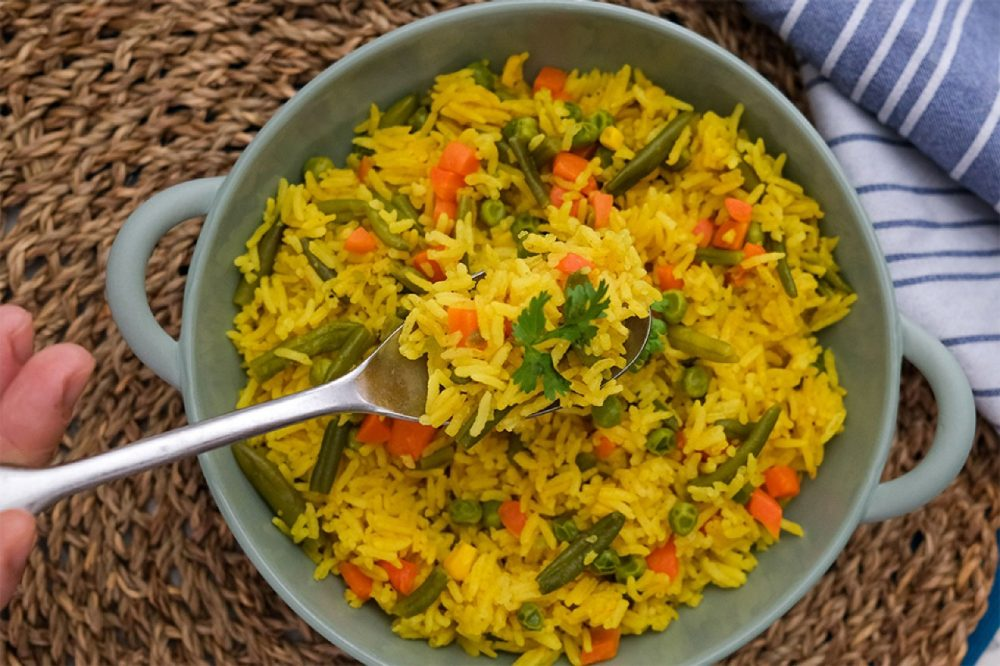

PIlau

Pilau Recipe
Ingredients:
Serves 2 people
- 150 g frozen mixed vegetables(thawed)
- ½ tsp garam masala
- ½ tsp ground turmeric
- ½ vegetable stock cube
- 1 tbsp butter
- 300 ml boiling water
- salt and black pepper(to season)
Steps
- Place the rice, turmeric, garam masala, butter, thawed vegetables and a pinch of salt and pepper in a microwave-proof bowl.
- Crumble the half stock cube over, then pour 300ml boiling water into the bowl. Stir to mix everything.
- Cover the bowl with clingfilm, poking a hole with a fork or knife.
- Microwave the rice on high for 7 minutes, then on medium for 5 minutes.